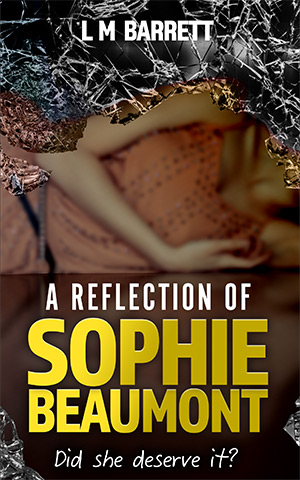

A Reflection of Sophie Beaumont
The debut novel by
The debut novel by
L M Barrett
A must read for Gone Girl fans. A highly entertaining, racy, fast paced book that you won't be able to put down.
When a devastated Richard Beaumont returns home one evening to find out that his beautiful, happy wife Sophie has committed suicide it sends him on a journey to unravel the mystery of why someone with a seemingly perfect life would do such a thing.
He discovers deep and dark secrets from her past and present that he would have rather left uncovered. Does what he find out eventually lead him to agree with her suicide note, that the love of his life deserved it?
Follow the twists and turns in Sophie's life as we learn the real reason for her demise.
 Next >
About the author
Reviews
Author's note
It would really help me out if you would leave a review of the book and I would love to find out what you, my readers, think of this book and of my writing.
As a first time author it’s hard to get my book noticed among all the other wonderful self-published books out there but I really want as many people as possible to read this novel. I hope you feel the same way and your reviews will help spread the word and make it possible for me to continue writing.
A fantastic debut novel from L M Barratt
This engrossing fast paced thriller kept me turning the pages, and doesn’t let up from start to finish. A really enjoyable read with a skillfully woven plot that kept me guessing till the end.
Conrad - Amazon review
Engrossing and enjoyable novel
This was a really enjoyable novel. The story developed quickly, and I enjoyed reading about Sophie's childhood and the effect this had on her as she grew up, and the choices she made The characters felt real to me, and I liked how some scenes would seem completely different when told from two different people's perspectives. I am still a bit haunted by the ending! I would definitely recommend this for anyone looking for an engrossing novel, with some surprises thrown in along the way.
M D - Amazon review
This could be the biggest thing since `Gone Girl`
A true page turner delving into Sophie's dark and tragic past. The brilliant cast of characters made me laugh out loud and sent chills down my spine at the more disturbing parts. I challenge anyone to not cry at the end! Spread the word, this must be read and could be the biggest thing since `Gone Girl`.
Gavin - Author's husband (possibly a biased review)
Next >Contact the author
Contact the author
I would love to find out what you, my readers, think of this book and of my writing.
If you would like to get in touch with me, please contact me at lmbarrett.author@gmail.com or sign up to my mailing list and I will keep you up to date with my new novels.
Buy now
Buy now
Now available to purchase on Amazon.
You can purchase the e-book or paper back of
A Reflection of Sohpie Beaumont from Amazon.
Read the first chapter
Drabbles
Drabbles are short 100 word stories, Lorraine has had a some published on BookHippo.co.uk, here is a selection of her favourites.
August 2018
Revenge
Tim, her husband, kissed her goodbye and said he loved her. He had a long drive on the motorway to attend a meeting in Edinburgh.
She knew full well what this ‘meeting’ was: a dirty weekend with his young secretary. Did he take her for a fool?
She heard Tim’s phone beep. He'd forgotten it. It was a message from Tim's boss. He was running late so start the meeting without him, the clients were important and he didn't want to keep them waiting.
So it was a business meeting after all.
Damn, she shouldn't have messed with his brakes.
August 2018
Attention Seeker
It was Ella’s time to shine. She wanted all eyes on her. Dressed in her best outfit and singing her favourite song, she captivated everyone in the room with her talent and beauty. During the round of applause, Ella took a bow to her fans, beaming a big smile. They loved her.
“Come on, Ella, time to go.”
“No!” she shrieked. “They want more.”
“Let them rest, it's nap time.”
“Bye, Granny. I'll sing again next time,” she promised as her parents led her away from the retirement home.
Probably for the best, as Ella had just pooped her nappy.
May 2018
The Troll
Peter checked his community Facebook page. A garish sofa was for sale.
'You expect someone to pay for that?' he typed. Click.
Further down the page, someone wanted opening times for a shop.
'Google it, stupid.' Click.
Next, a positive recommendation for a restaurant including a family photo.
'No one cares and we don't want to see your ugly children.' Click.
A knock at the door interrupted his work. He shut his laptop.
“Father Peter, it's time for mass. Your congregation is waiting.”
Peter was looking forward to preaching his sermon today. It was on the evils of social media.
May 2018
The Stalker
Holly was heading home from the bus stop. She felt nervous being alone when it was so dark.
As she walked along the deserted streets, she sensed someone behind her. She turned her head slightly and saw a tall figure.
She quickened her pace and so did the shadowy figure. Her heart pounded as she broke into a run.
The man caught up with her and tugged on her shoulder. Holly couldn't breathe as she turned around.
“Take your headphones out! Why are you running away? Dad sent me to walk you back from the bus stop,” said her brother.
May 2018
Bad Mum
It had been a long day. They had moved house and were surrounded by boxes. It was bedtime for three year old Daisy. A tired mum asked her to brush her teeth. Daisy did so but instantly began spitting it out, complaining about the horrible taste.
“Stop making a fuss. I can't find the kids’ toothpaste so use the grown-up toothpaste tonight,” insisted Mum. She brushed her crying daughter’s teeth, ignoring her complaints.
She put Daisy to bed and went to the bathroom to brush her own teeth. She picked up the tube and saw it was hair-removal cream.
April 2018
The Secret
Her best friend called to warn her. It had finally happened. The day she had dreaded for years. The day her colleagues and friends would find out her secret.
Only her best friend and family knew. She had sworn them to secrecy. Not even her handsome twenty-nine year old boyfriend knew, nor her co-workers at the fashion magazine. They wouldn't understand.
There was nothing she could do as she made her way home to face the music. She took a deep breath as she opened the door.
“Surprise!” everyone shouted.
She stood looking at that awful banner: 'Happy 40th Birthday'.
Read the first chapter
Prologue
Richard, One Year Earlier.
Richard returned from the airport at around midnight. It was not unusual for him to be away on business trips. He was a management consultant and his job meant that he was often away from home. He was exhausted and couldn't wait to have a quick shower and hop into bed. Hopefully, Sophie, his wife was still awake as she promised that she would try to stay up for him tonight.
He walked into the house; it was very quiet and he couldn't see any lights left on. Presumably, Sophie had gone to bed as his flight had been delayed by a couple of hours. He dropped his bags and went into the kitchen for a glass of water. From the kitchen, he could see the garage from where he was standing and the garage light was still on. So he stepped out into the chilly night and made his way to the back garden towards the garage. He could hear the muted hum of the car engine and was immediately confused. Why would Sophie be in the car at this time of night?
He pulled up the garage door and smelt the fumes. Sophie was in their Range Rover asleep and the car engine was turned on. The car door was unlocked and Richard had to cover his mouth as soon as he opened it as he was overcome with the fumes. He dragged Sophie out of the car and into the garden.
“Sophie, wake up, wake up!” Richard pleaded.
He shook her by her shoulders and tried rocking her body. She didn't respond. He bent down to her mouth to see if he could feel any breath on his cheek, nothing. He checked for a pulse but his own heart was beating so much that he didn't think he would be able to distinguish which was hers and which was his. Finally, pulling out his mobile, he somehow managed to dial 999.
By the time the police and ambulance had arrived, Richard was kneeling on the ground with his head resting on Sophie's body, crying his eyes out. He hoped the paramedics would be able to revive her, but they pronounced her dead as soon as they had arrived. It was hopeless, Sophie, his beautiful, perfect wife of nine years was gone.
WPC Jackson pulled Richard away from the body and gently led him back into the kitchen and sat him down. She took in the room; it was pristine and spacious. It was a modern, sleek, white kitchen with a huge island and bi-fold doors leading out into the garden. One wall was painted with blackboard paint with writing scribbled on it such as cute messages, shopping lists and kid’s drawings. Family pictures were displayed all over the house. They were beautiful family photos, WPC Jackson noted to herself. Sophie had long flowing brown hair and large blue eyes. The daughter was dark-haired just like her and the boy was blonde like his father. They couldn't have been much older than six or seven. What a waste, she thought.
“I know this is a very difficult time, but do you have any idea why she would do this?” asked WPC Jackson.
“Do what?” asked Richard, barely comprehending the question.
“Why Sophie would take her own life?” she replied.
“No, she must have made a mistake. She's the happiest person I know, she loves life,” Richard argued.
She had left a note though; Richard had found it on the kitchen island. It simply said 'I deserve this' in her handwriting.
“Why did she deserve this?” asked the WPC.
Richard had no answer, he simply shook his head.
Richard proceeded to tell her that Sophie was the most wonderful person he had ever met. Apart from the post-natal depression after the birth of their first child, she had never been treated for depression or had shown any signs of it since. She was a strong-willed, vibrant person who was always planning for their future. She was really looking forward to their family holiday that was coming up. They were planning to go away for the whole of the six-week summer break.
Richard remembered her excitement when he announced recently that he was taking a well-deserved six weeks off work and he would be all theirs for the entire summer. The four of them were to enjoy a beautiful luxury villa in Spain without any pressures of work hanging over him. Sophie had always insisted she could cope on her own but she was still thrilled that she wouldn't have to deal with both children for the six-weeks they had off from school. They had plans of croissants, freshly brewed coffee and freshly squeezed juice by the pool every morning. Followed by swimming, trips to the beach, snorkelling and dining at the local restaurants. Richard was especially looking forward to getting the kids off to bed early, to enjoy drinking bottles of the local red wine and making love to his beautiful wife. They barely ever got to spend time together as he was away a lot due to work, so this family time was going to be perfect.
“Milo and Lucia! What the hell am I supposed to tell the children?” Richard exclaimed.
He crumpled into uncontrollable crying at the thought of having to tell his two wonderful, innocent, young children that they would never see their mummy again. WPC Jackson put her hand on Richards back and patted it gently. She knew in these moments that empty platitudes would not be helpful and it was best to remain silent. Thinking about her own son at home being left without his mummy was unbearable. There was really nothing she could say to make this any easier.
Hours later the body had been taken away to the morgue. Richard called his parents who lived close by and told them the news. Fortunately, the kids had been sleeping at their house that night; Sophie had asked them to help out at the last minute. His parents promised they would continue to help look after the kids and even help break the tragic news about their mummy.
The police left the house at around dawn. What a waste they thought to themselves again.
Chapter 1
Richard, London - Twelve Years Earlier.
It was a warm Friday evening; Richard was enjoying some after work drinks with his colleagues at a trendy new bar in Canary Wharf. They were celebrating, as he'd just received a promotion and was now a senior management consultant which meant a huge pay rise. Drinks were on him that night. As a treat, he bought himself a grey, modern, British cut, bespoke suit from Saville Row. So he looked impeccably stylish and felt incredibly invincible. He'd worked hard since he had left university with a first-class degree in business studies eight years ago. His social life had suffered as he had to put in the long hours to get himself noticed at work. Relationships had broken up due to his lack of attention. In fact, he hadn't had a girlfriend for about two years and preferred to keep to casual acquaintances with women he met in bars. He was never short of offers as he knew he was a handsome guy. Maybe tonight he would get lucky with a beautiful blonde or brunette, or maybe not. He didn't care, he was having a good time celebrating and planned to stay out late and spend the weekend recovering.
Then she walked in. The cool air breezed in when she opened the door and stood there surveying the bar. She was looking for someone. Her hair was dark, shiny and poker straight. She had on a tight-fitting, black dress a couple of inches above the knees. It was long-sleeved and high cut and although she was covered up, the tightness of the dress revealed that she had an amazing figure. To complement it she wore long, black, high-heeled boots. Richard thought she was the most beautiful woman he'd ever seen in his life. He caught her eye when she glanced in his direction and his heart skipped a beat. Eye contact was broken when she spotted her friends and walked over to sit with them in their booth.
This was his lucky night; Emma from his office was part of this group of friends. He ordered a bottle of champagne with some glasses and sauntered confidently over to the booth.
“Hey Emma, I didn't see you there. I'm just celebrating with the guys over there. Would you and your friends like some champagne?” Richard offered.
Emma looked surprised and pleased: “Yes, that would be lovely and congratulations on your promotion.”
Richard took the opportunity to sit down; he was now facing this Goddess. He couldn't believe his luck that it was so easy to get this close so quickly. Studying her face close up, he saw she had the most amazing blue, sparkly eyes and perfect bee-stung lips. Her skin was pale and translucent and she had a delicate nose. Her oval shaped face was offset by her long, dark hair that tumbled over her shoulders. She held up her glass and nodded towards him. “Well, congratulations stranger,” she said in a very nicely, spoken voice.
He held his glass up and chinked hers. Her eyes penetrated every ounce of him and he couldn't take his eyes off her. Normally a very cool character around women, he could barely think of anything to say.
“I'm Richard,” was the best he could come up with.
“Sophie, pleased to meet you,” she replied.
Sophie, Sophie, this was now his favourite name in the world. “Are you a model?” he kicked himself when the words came out. He didn't mean to sound so cheesy. Nevertheless, she smiled and seemed quite pleased.
“No, thank you for saying, but I'm an interior designer,” she replied modestly.
He pretended he couldn't hear her and moved directly next to her as an excuse to be closer to her.
The beer and champagne had given Richard confidence and over the next two hours, they only had eyes for each other. Apart from going to the ladies with her friend Emma, Sophie was with him for the entire evening. He found her really easy to talk to and there were no uncomfortable silences between the two of them. If anyone came over to talk to Richard, he barely noticed as he was so engrossed in everything Sophie was saying. He sat closely and could smell her perfume, he didn't know what it was but it suited her and this was now his favourite smell in the world. They had a great deal in common, they both liked skiing, hiking, travelling, reading and loved sushi. Neither had been surfing before but they were both eager to try it. They reminisced about country pubs in the winter and sitting by log fires. They both wanted to learn a new language and had a really cute row over which language to learn. She thought French as it sounded sexier and he thought Spanish as it was more widely spoken.
As a group, they all continued to go for a bar crawl around Canary Wharf. Richard made sure that he was standing or sat next to Sophie at each stop. Time went by so quickly and before he knew it, it was three a.m. Sophie stood up and said it was time for bed. Richard hoped she meant his. He left the bar with her and put his suit jacket over her shoulders as there was a chill in the air and they walked until he flagged down a taxi. He gave her his number and a quick peck on the cheek and she got into the taxi and that was that. Slightly disappointed to end the night, he stood there watching the taxi drive off and at that moment he knew he wanted to spend the rest of his life with that woman.